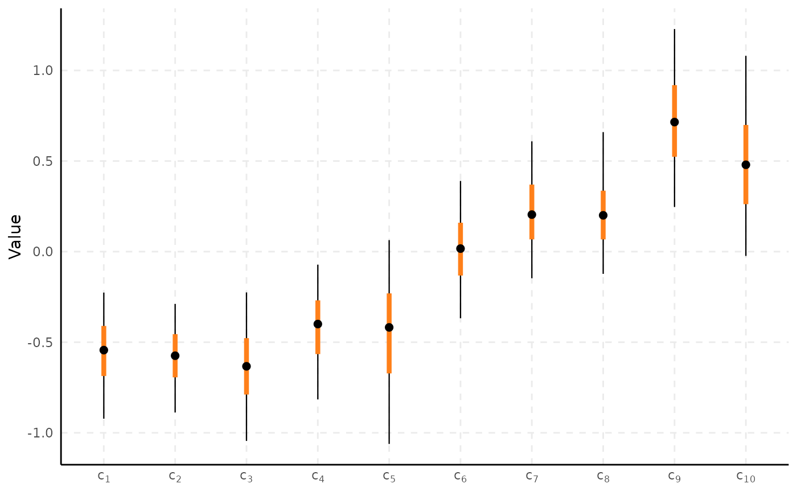
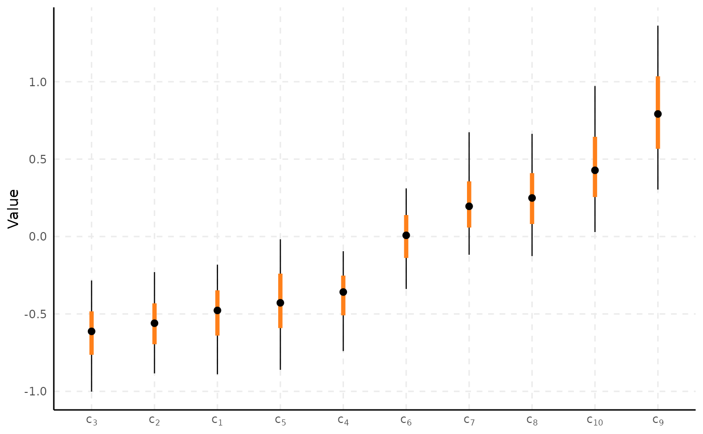
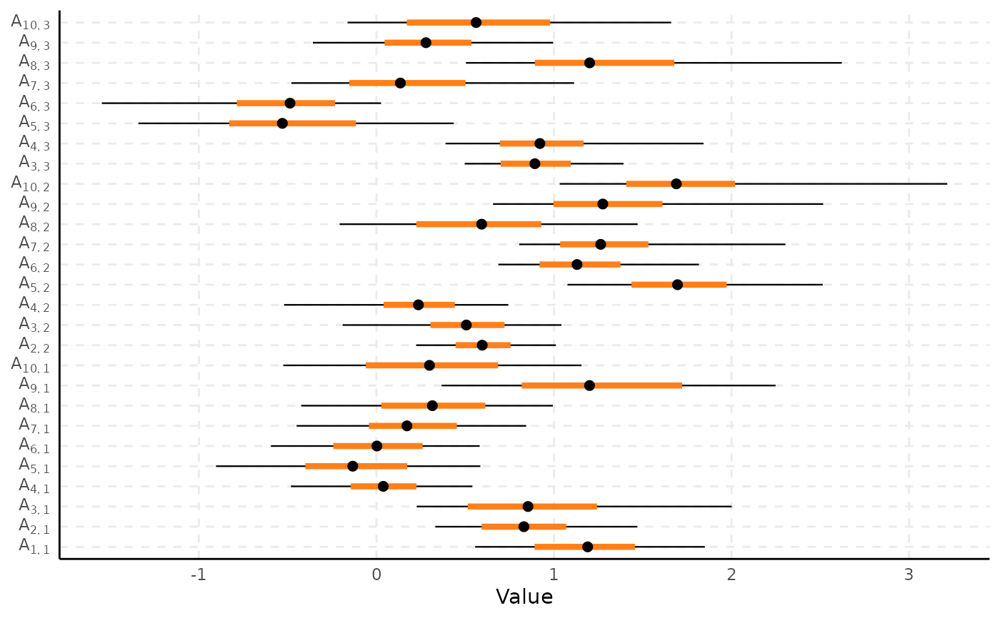
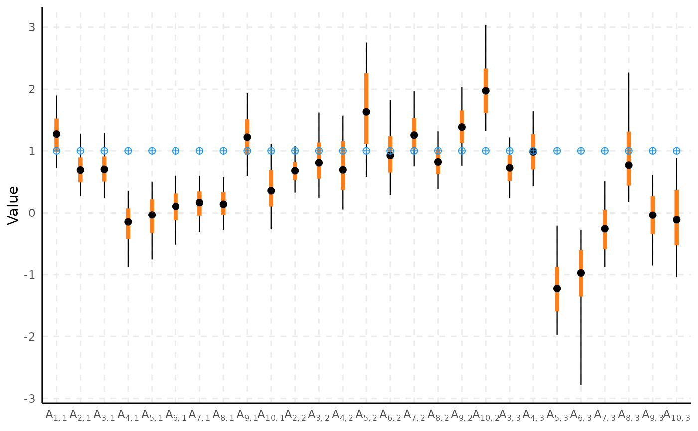

Draws a caterpillar/forest plot of posterior credible intervals directly
from a fitted spifa model: one row per parameter, with a thin
line for the prob_outer interval, a thick line for the
prob interval, and a point at the point_est, computed
directly from the raw draws (quantiles/median/mean). Unlike
plot_trace/plot_density, this is a single
combined view by design – comparing intervals side by side is the whole
point, so there is no faceted alternative – but sort can reorder
parameters by their point estimate, which a facet can't do usefully
across independent panels.
Usage
plot_interval(
x,
select,
horizontal = FALSE,
burnin = 0,
thin = 1,
nshow = NULL,
prob = 0.5,
prob_outer = 0.9,
point_est = c("median", "mean"),
sort = FALSE,
reference = NULL,
...
)Arguments
- x
A fitted
spifamodel.- select
Parameters to plot, as in
plot_trace.- horizontal
Logical; if
FALSE(default), parameters run along the x-axis and values run along the y-axis; ifTRUE, the axes are swapped (a forest-plot layout).- burnin
Number of initial iterations to discard.
- thin
Thinning interval applied after
burnin.- nshow
As in
plot_trace(a random subsample whenselectmatches more thannshowparameters), butNULL(show every matched parameter) by default: unlike a faceted plot, a single interval plot stays readable with many more than 10 rows.- prob
Width of the thick (inner) credible interval (a central quantile interval). Defaults to
0.5.- prob_outer
Width of the thin (outer) credible interval. Defaults to
0.9.- point_est
Either
"median"(default) or"mean".- sort
Logical; if
TRUE, reorder parameters by their point estimate instead of their natural order. Defaults toFALSE.- reference
Optional reference values to overlay (e.g. the true values in a simulation study), as a fourth marker alongside the interval and point estimate. Only valid when
selectis a single group name (e.g."A"): an unnamed vector or matrix matching that group's own shape (e.g.parameters$discrimination, annitems x nfactorsmatrix). Structurally-restricted parameters (dropped internally before plotting) are silently ignored if present inreference.- ...
Currently unused.
Examples
# \donttest{
data(ipixuna)
samples <- spifa(items ~ 1, data = ipixuna, nfactors = 3, ngp = 0, niter = 1000)
plot_interval(samples, select = "c")

plot_interval(samples, select = "c", sort = TRUE)

plot_interval(samples, select = "A", horizontal = TRUE)

# overlay a reference set of discrimination values (e.g. from theory)
nitems <- ncol(ipixuna$items)
reference_A <- matrix(1, nitems, 3)
plot_interval(samples, select = "A", reference = reference_A)

# }